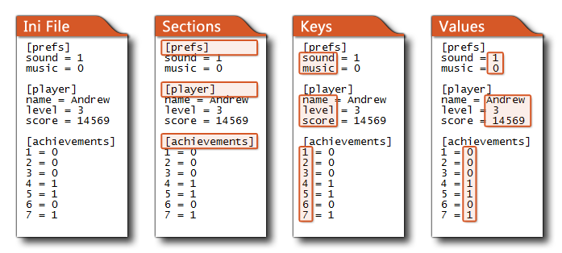

Mit dieser Funktion können Sie einen Wert (numerisch) in eine INI-Datendatei schreiben. INI - Dateien sind in Abschnitte aufgeteilt und dann wird jeder Abschnitt wird anschließend aufgeteilt in key - Wert - Paare. Eine typische Ini-Datei würde also etwa so aussehen: 
ini_write_real(section, key, value);
| Streit | Beschreibung |
|---|---|
| section | Der Abschnitt der.ini, in den geschrieben werden soll. |
| key | Der Schlüssel innerhalb des relevanten Abschnitts der INI, in den geschrieben werden soll. |
| value | Der tatsächliche Wert, der an das entsprechende Ziel geschrieben werden soll. |
N/A
score = 1000;
ini_open("savedata.ini");
ini_write_real("save1", "Score", score );
score2 = ini_read_real("save1", "Score", 0 );
ini_close();
Dies setzt den Score auf 1000, öffnet dann "savedata.ini" und schreibt diesen Wert in "save1"> "Score". Dann wird score2 auf den tatsächlichen Wert unter "save1"> "score" (1000) gesetzt und die.ini wieder geschlossen. Hätte es diesen Wert nicht gefunden, wäre score2 als 0 gesetzt worden.